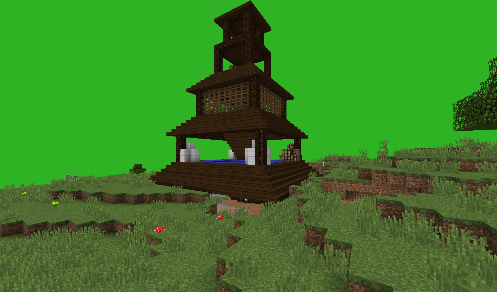

Ѕашн€ зомби и скелетов - место с монстрами и только! »меет много ценных ресурсов на вершине, но чтобы туда пробратьс€ вам придетс€ одолеть много монстров! ¬се награды наход€тс€ в довольно скрытном месте. ѕросто так вы его не найдете, однако тайники не такие сложные, как например в ƒоме –азбойников
